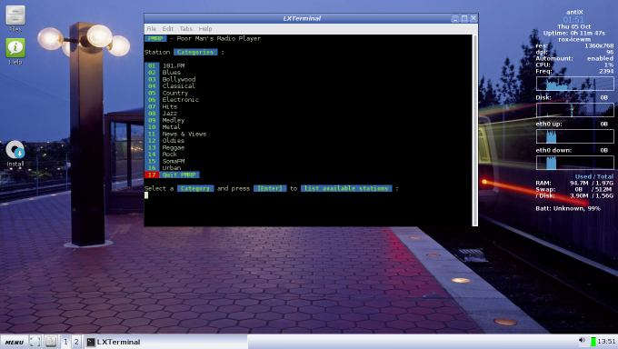

On this page:
What is pmrp?
[top]

pmrp (Poor Man’s Radio Player) is an Internet radio player script written in bash by hakerdefo.
Features:
-
350 hand-picked radio stations.
-
Music, news, talk-shows, interviews, comedy, plays and much much more.
-
Easy menu system to browse-navigate between different radio stations.
-
Now playing information.
-
Very low memory footprint.
-
No configuration required. Ready to play from the word go.
Usage:
Under Applications > Sound and Video and follow the instructions.
Links
[top]